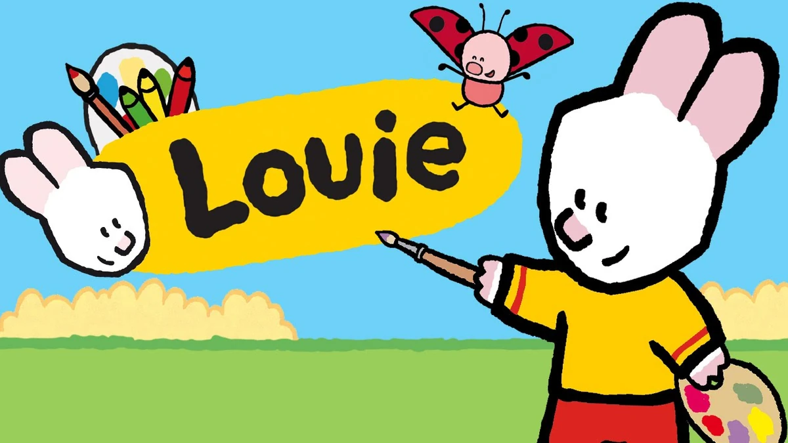
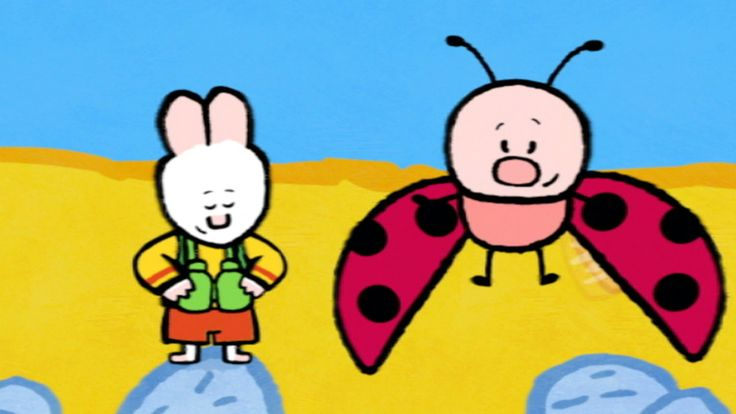

About Louie
Louie es un conejo blanco antropomórfico que viste camiseta amarilla y shorts rojos. Su carácter es curioso, creativo y siempre dispuesto a ayudar. La esencia del personaje está en su capacidad de transformar problemas cotidianos en oportunidades para enseñar a dibujar. Cuando surge una dificultad, Louie toma sus lápices de colores y explica paso a paso cómo realizar un dibujo, que cobra vida y se convierte en la solución. De esta manera, Louie no solo guía a los niños en el proceso creativo, sino que también les muestra cómo la imaginación puede tener un impacto práctico.

Louie y su amiga Yoko
Origen y contexto de la serie
Louie, dibújame es una serie infantil francesa creada en 2006 por la productora Millimages, basada en los libros de Yves Got. Su formato breve, con episodios de siete minutos, fue pensado para captar la atención de los niños en edad preescolar y enseñarles a dibujar de manera sencilla. La serie se transmitió en distintos países y llegó a Latinoamérica a través de Discovery Kids en 2008, convirtiéndose en un referente de programas educativos que combinan entretenimiento con aprendizaje visual.
¿Dónde ver?
La compañera inseparable: Yoko
Yoko, una mariquita simpática y vivaz, acompaña a Louie en cada episodio. Su papel es interactuar con la audiencia, aportar detalles a los dibujos y complementar las explicaciones de Louie. Esta dinámica refuerza el carácter educativo del programa, ya que Yoko añade información y motiva a los niños a participar activamente. La relación entre ambos personajes transmite valores de cooperación y amistad, mostrando cómo el trabajo en equipo enriquece la experiencia de aprendizaje.

Formato narrativo de los episodios
Cada capítulo comienza con la frase “Louie, dibújame un/a…”, que introduce el objeto o animal que será dibujado. A partir de ahí, Louie y Yoko enfrentan un problema junto a un personaje nuevo, y el dibujo se convierte en la herramienta para resolverlo. Si el primer intento no funciona, Louie repite el proceso en su cuaderno hasta lograr la solución adecuada. El episodio concluye con la resolución del conflicto y una despedida dirigida a la audiencia, reforzando la idea de participación directa y la importancia de la perseverancia.
Impacto educativo y valores transmitidos
La serie tiene un fuerte componente pedagógico, ya que enseña a los niños a dibujar de manera clara y accesible, estimulando su creatividad y capacidad de observación. Al mostrar cómo los dibujos pueden transformarse en personajes u objetos útiles, se fomenta la idea de que la imaginación tiene un poder práctico en la vida cotidiana. Además, la interacción constante con la audiencia invita a los niños a seguir las instrucciones y a sentirse parte de la historia. Los valores transmitidos —como la cooperación, la creatividad y la resolución de problemas— convierten a Louie, dibújame en una propuesta educativa y entretenida que ha dejado huella en quienes crecieron viéndola.